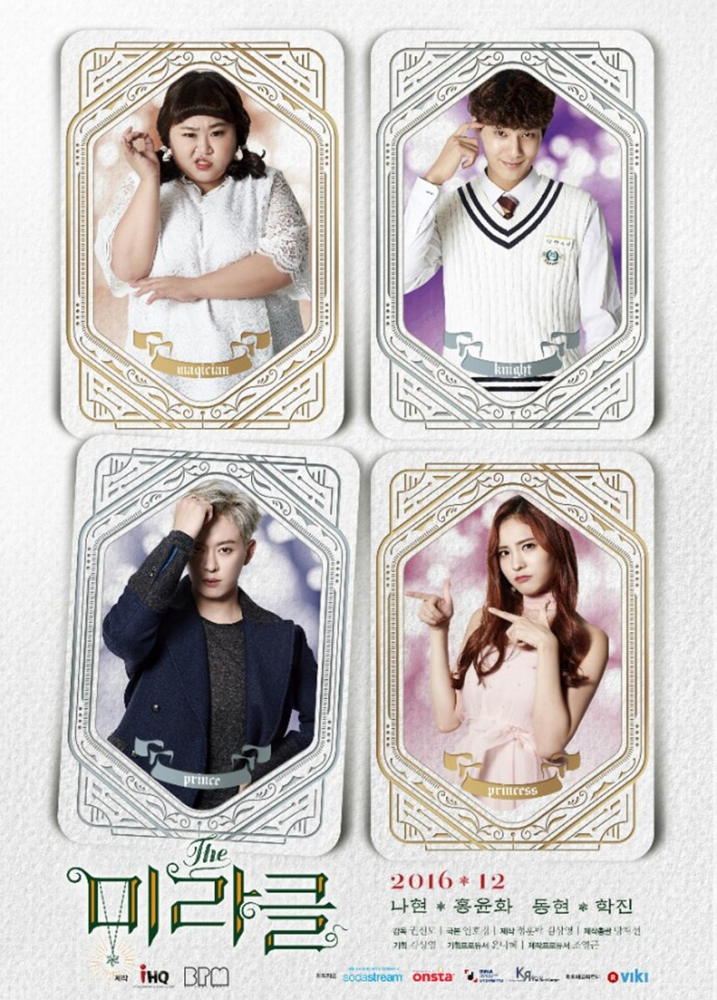

DORAMAS
Inicio
paginas para ver
formato
produccion
popularidad
cifras de audiencia
un amor tan hermoso
recuestate sobre mi hombro
mi primer amor de verdad

el milagro
mi romance secreto
love alarm
the heirs
esta bien no estar bien
she was pretty